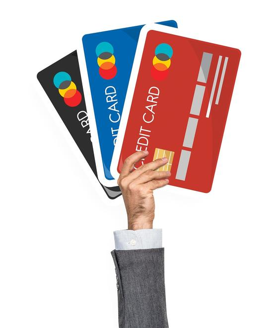
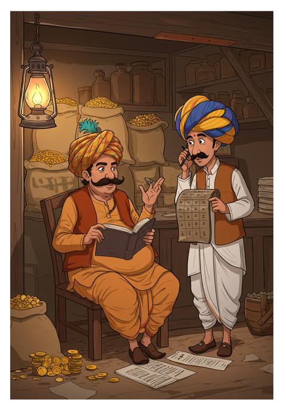
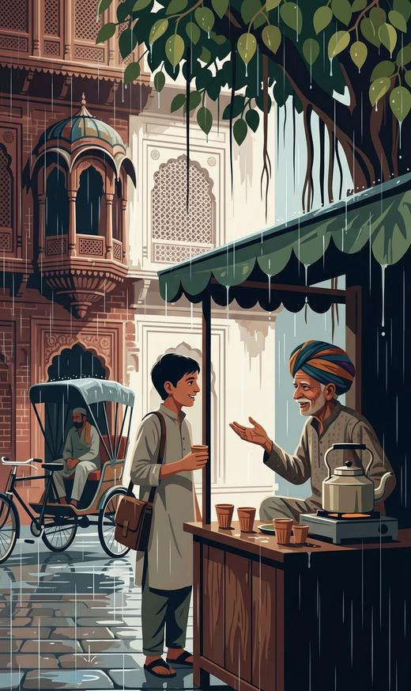

CATEGORY 5
Neutral content
Savings · Salary · Jan Dhan · Current · FD · RD
₹5 lakhinsured per bankDICGC

4 nomineesper accountfrom Nov 2025
₹0 to prepayfloating loansRBI, from Jan 2026


From “what is a bank?” to building a portfolio.
No brandsNo affiliate linksOfficial sources only
Figures on this cover last checked 24 Nov 2026 · DICGC, Ministry of Finance, RBI
Our rule: we explain types and features, never brands. Educational content, not investment, tax or legal advice. 🔄 marks figures that change often; check official sources before acting.
Start
Understand money and the banking system
0 of 3 learned
Content is a learning guide. Rules, rates and limits can change. Always confirm the current position with the linked regulator or government source.